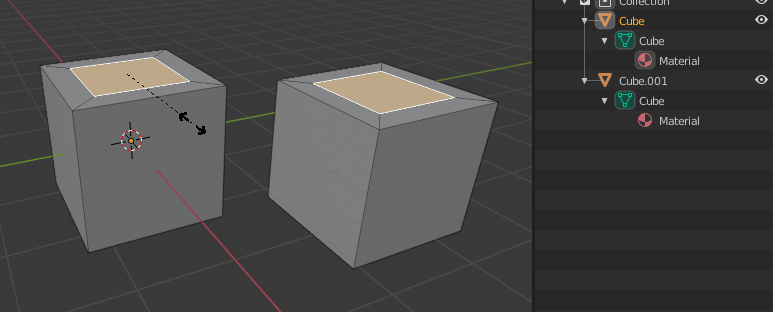
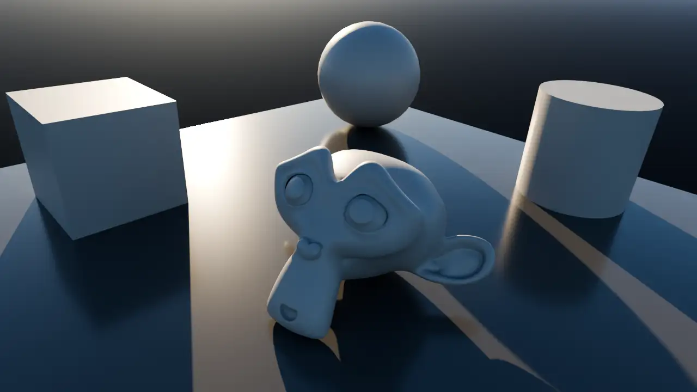
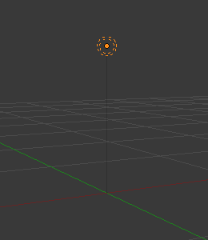
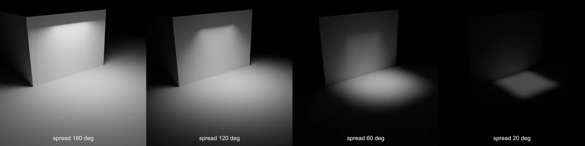

Pick a module size
A 2m × 2m grid cell is a common, easy-to-count choice for a small room.
Environment Art · 55–70 minutes · Grades 7–12
A whole level modeled as one giant mesh is slow to change and impossible to reuse. Build a small set of wall, floor, and doorway pieces on a fixed grid instead, snap them together, and place your window and chair inside.
Finish line: a small lit room built from reusable modular pieces, with your window and chair inside it.
Every piece obeys the same grid size, so any two pieces line up without measuring twice.
Kit
Minimum viable set
A 2m × 2m grid cell is a common, easy-to-count choice for a small room.
A floor tile, a solid wall panel, a wall panel with your Lesson 02 window, and a doorway panel.
Every wall piece must share the same width and height so a solid panel and a doorway panel are interchangeable.

Snapping
Let Blender do the alignment
Use 3D Viewport header → Snapping (magnet) → Snap To → Increment, or press Shift+Tab to toggle snapping. Every grab, rotate, and scale now jumps to clean values instead of landing at 2.0473m.
Snap mode
Snaps moves to the viewport grid, or to a fraction of it while holding Shift for finer control.
Snap mode
Snaps directly to another object's vertex — useful for lining up a doorway piece exactly against a wall's edge.
See the grid
3D Viewport header → Viewport Overlays popover → Guides → Grid Grid scale follows scene units and zoom; use the Sidebar's Item → Transform values for an exact module size.
Assemble
Reuse, don't remodel
Press Alt+D instead of Shift+D while the kit design is still changing. Linked copies share one mesh — editing any one edits them all at once.
Once a piece's design is locked, select it and choose Object → Relations → Make Single User → Object & Data so future edits don't leak to every copy.
Outliner → right-click empty space → New Collection, then drag floor, wall, and prop objects into named groups. A tidy Outliner is the difference between a five-second fix and a ten-minute hunt.
Light
Make the form visible
Parallel rays
Acts like distant daylight through your window — direction matters, position does not.
Radiates outward
A bare bulb, radiating equally in every direction from one location.
Soft, directional
Simulates a window or a lamp panel — soft shadows, size and shape both matter.



Add it with 3D Viewport → Shift+A → Light → Sun. Rotate it so its rays pass through your Lesson 02 window. Change Strength at Properties Editor → Object Data Properties (green bulb) → Light → Strength.
Build
Hands on
Use 3D Viewport header → Snapping (magnet) → Snap To → Increment; type exact module moves (for example G X 2) when precision matters.
Model one floor tile at your module size, then Alt+D duplicate it into a rectangle of at least 3×3 tiles.
Model one solid wall panel and duplicate it around the floor's perimeter, leaving one opening for a doorway.
Swap one wall panel for your Lesson 02 window wall, and leave one gap as an open doorway.
Bring in (or append) your Lesson 03 chair and set it on the floor at a believable scale next to your 1.7m reference cube.
Add a Sun light angled through the window, organize objects into Collections, and press Ctrl+S.
Check
Exit ticket
Definition of done